John Ronald Reuel Tolkien
Author, Poet, & Academic

About J.R.R Tolkien
J.R.R. Tolkien was an English writer, poet, and professor who is best known as the author of the highly-acclaimed books; The Hobbit, The Lord of the Rings, and The Silmarillion.
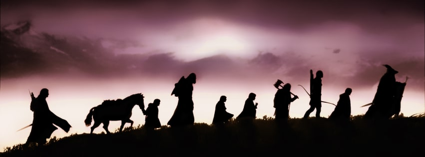Shortly before his father died (1896) his mother took him and his younger brother to his father's native village of Sarehole, near Birmingham, England. The landscapes and Nordic mythology of the Midlands may have been the inspiration for "The Shire" and "Hobbits", and ultimately the inspiration for his book "The Hobbit"(1937). After his mother's death in 1904 Father Francis Xavier Morgan, a RC priest of the Congregation of the Oratory, looked after him. Furthermore, Tolkien was educated at King Edward VI school in Birmingham. After that, he studied linguistics at Exeter College, Oxford, and received his Bachelors in 1915.
In 1916 he fought in World War I with a unit called "Lancashire Fusiliers". It is believed that his experiences during the Battle of the Somne may have been the inspiration for the darker side of his novels. when he returned from the war he worked as an assistant on the Oxford English Dictionary (1918-20) and took his M.A. in 1919. In 1920 he became an english professor at the University of Leeds. He then went on to Merton College in Oxford, where he became a professor of Anglo-Saxon (1925-45) and professor of the English Language and Literature (1945-59). His first publication was an edition of Sir Gawain and the Green Knight (1925). He also wrote books on Chaucer (1934) and Beowulf (1937). Tolkien will however be remembered most for his books The Hobbit (1937) and the Lord of the Rings (1954-55). Interesting enough, The Hobbit began as a bedtime story for his children and wrote Lord of the Rings over a period of about 14 years.
Tolkien never expected his stories to become popular, but by pure luck a book called The Hobbit, which he had written some years before for his own children, came in 1936 to the attention of Susan Dagnall, an employee of the London publishing firm "George Allen & Unwin", who persuaded Tolkien to submit it for publication. However, when it was published a year later, the book attracted adult readers as well as children, and it became popular enough for the publishers to ask Tolkien to produce a sequel
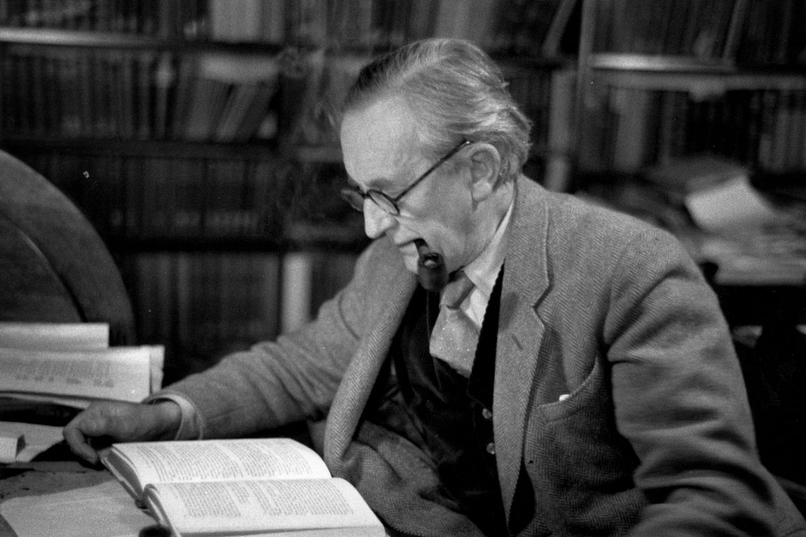The request for a sequel was the catalyst for creating his most popular novel yet: the epic novel of "The Lord of the Rings "(originally published in three volumes 1954-1955). Tolkien had spent more than ten years writing the main story of "The Lord of the Rings". Interestingly, his best friend C.S Lewis (Creator of The Chronicles of Narnia) provided constant support and help while he produced his novel.
Tolkien at first intended The Lord of the Rings to be a children's tale akin to The Hobbit, but it quickly grew darker and more serious while he wrote it. Both The Hobbit and The Lord of the Rings are set against the background of The Silmarillion, but in a time long after it.
The Lord of the Rings became immensely popular in the 1960s and has remained popular ever since, ranking as one of the most popular works of fiction of the 20th century, confirmed by both sales and reader surveys.
After Tolkien's death, his son Christopher published a series of works based on his father's extensive notes and unpublished manuscripts, including The Silmarillion.
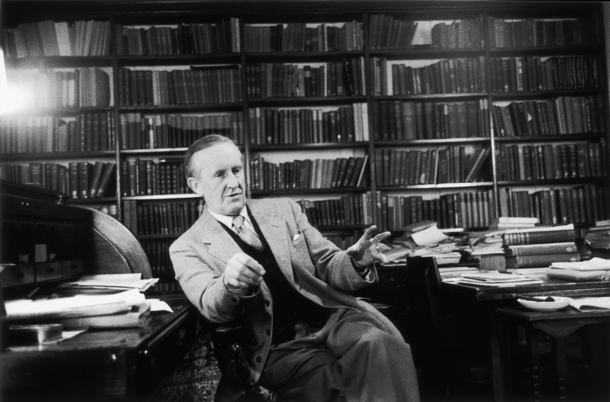Total Books Written
LoTR Novels
Languages Created
Characters Created
Lore
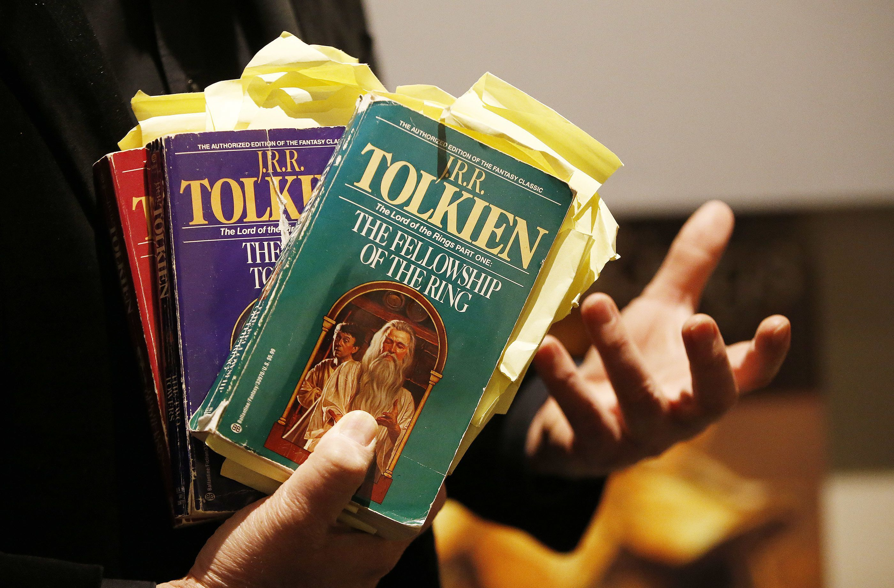
The Silmarillion
The Silmarillion is a collection of J.R.R. Tolkien's works that were edited and published after his death by his son Christopher, with the assistance of fantasy fiction writer Guy Gavriel Kay. It is the primary source for Middle-earth's ancient history and the First Age, and for the downfall of the kingdom of Númenor.
The Silmarillion is comprised of five parts:
- The Ainulindalë - The first part of the Silmarillion. The creation of Eä (Tolkien's universe), the Timeless Halls, and Ainur by Eru Ilúvatar and the start of the corruption of Melkor
- The Valaquenta - A brief description of the Valar and Maiar, the supernatural beings.
- The Quenta Silmarillion - The history of the events before and during the First Age, which forms the bulk of the collection
- The Akallabêth - The history of the Second Age
- Of the Rings of Power and the Third Age-
- his five-part work is also known as Translations from the Elvish.
These five parts were initially separate works, but it was the elder Tolkien's express wish that they be published together. Additionally, the book incorporates portions of several other documents not part of the original text, such as the story of Maeglin. Of the Rings of Power and the Third Age along with the Akallabêth are wholly separate and independent from the rest of the Silmarillion.
In 1980, Christopher Tolkien published a collection of more material, under the title Unfinished Tales of Númenor and Middle-earth. In the coming years (1983–1996), he published a large amount of the remaining unpublished materials of J.R.R Tolkien (His father), together with notes and extensive commentary, in a series of twelve volumes called The History of Middle-earth. They contain unfinished, abandoned, alternative, and outright contradictory accounts, since they were always a work in progress for Tolkien and he only rarely settled on a definitive version for any of the stories. There is not complete consistency between The Lord of the Rings and The Hobbit, the two most closely related works, because Tolkien never fully integrated all their traditions into each other. He commented in 1965, while editing The Hobbit for a third edition, that he would have preferred to rewrite the book completely because of the style of its prose.
The Fellowship of The Ring
The Fellowship of the Ring is the first of three volumes of The Lord of the Rings created by J.R.R. Tolkien. It is divided into Book I and Book II. It was originally released on July 29, 1954 in the United Kingdom by Allen & Unwin. Its story is followed by the novel The Two Towers and concluded by The Return of the King.
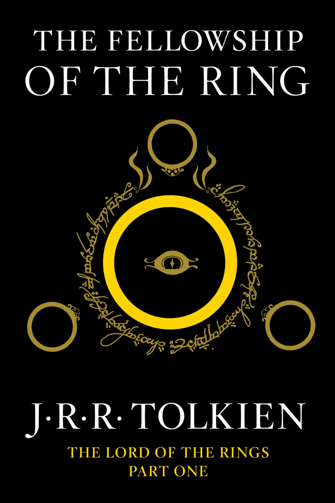Book I: The Ring Sets Out
The first sets the stage for the adventure and follows Frodo Baggins as he flees from his home in the Shire to escape the minions of the Dark Lord Sauron. Sauron seeks the One Ring that will allow him to control the Bearers of the nineteen other Rings of Power and control the three major races of Middle-earth: Elves, Men, and Dwarves. The One Ring has been inherited by Frodo who finds himself unwittingly in the midst of a struggle for world domination.
Book II: The Journey of the Nine Companions
Book II narrates Frodo's stay at Rivendell, where a plan is hatched at the Council of Elrond to destroy the Ring in Mordor. Early on Frodo meets his uncle Bilbo, whom he had not seen since he left Hobbiton seventeen years earlier. Frodo sets forth from Rivendell with nine companions: two Men, Aragorn and Boromir, son of the Steward of the land of Gondor; an Elven prince, Legolas; Frodo's old friend and powerful wizard, Gandalf; Gimli the Dwarf; and Frodo's original three hobbit companions. These Nine Walkers, the Fellowship of the Ring, were chosen to represent the free races of Middle-earth and as a balance to the Nine Riders. They were also accompanied by Bill the Pony, whom Strider and the Hobbits acquired in Bree as a pack horse. Their attempt to cross the Misty Mountains is foiled by heavy snow, so they are forced to take a path under the mountains via Moria, an ancient Dwarf kingdom, now full of Orcs and other evil creatures, such as the Watcher in the Water guarding the west gate. Just before escaping Moria, Gandalf falls into the abyss while battling a Balrog. This book ends when Frodo and Sam depart secretly for Mordor and the Fellowship of the Ring dissolves.
The Two Towers
The Two Towers is the second volume of J.R.R. Tolkien's The Lord of the Rings trilogy. It is preceded by The Fellowship of the Ring and followed by The Return of the King.
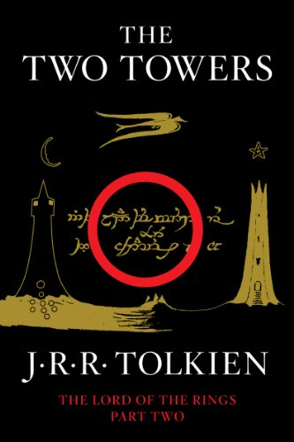Merry and Pippin escape from the Orcs who captured them when the Orcs themselves are attacked by the Riders of Rohan. Merry and Pippin head into nearby Fangorn Forest where they encounter treelike giants called Ents.
Aragorn, Gimli the Dwarf, and Legolas the Elf, tracking Merry and Pippin, come across Éomer of Rohan and his riders who tell them that they attacked the Orcs the previous night and left no survivors. However, Aragorn is able to find small prints and they follow these into Fangorn, where they meet a white wizard who they at first believe to be Saruman, but who turns out to be their wizard friend Gandalf, whom they believed had perished in the mines of Moria. He tells them of his fall into the abyss, his battle to the death with the Balrog and his reawakening. The four ride to Edoras and persuade King Théoden that his people are in danger. In the process, Saruman's agent in Edoras, Gríma Wormtongue, is expelled. Aragorn, Gimli and Legolas then travel to the defensive fortification of the Hornburg, while Gandalf goes north in search of Erkenbrand's men to bring as reinforcements. At the Hornburg, they resist an onslaught of Orcs and Men sent by Saruman, and Gandalf arrives the next morning with the Westfold army led by Erkenbrand just in time. The fleeing Orcs run into a forest of Huorns; half-tree, half-ent creatures and none escape. Aragorn, Gimli, Legolas, Théoden, Éomer, Gandalf and some guards then head to Saruman's stronghold, Isengard.
There, they reunite with Merry and Pippin and find the fortress overrun by Ents, who had flooded it with the nearby river and besieged Orthanc, where Saruman hid in refuge. After giving Saruman a chance to repent, Gandalf casts him out of the order of wizards. Wormtongue throws something from a window at Gandalf and those with him. This turns out to be one of the palantíri. Pippin, unable to resist the urge, looks into it and has an encounter with Sauron. Gandalf and Pippin then head for Minas Tirith in preparation for the upcoming war.
The Return of the King
The Return of the King is the third and final volume of J.R.R. Tolkien's The Lord of the Rings, concluding The Fellowship of the Ring and The Two Towers.

The story begins as Gandalf delivers news to Denethor, Steward of Gondor, that war is imminent. Gandalf brings Pippin with him, who enters the service of the Steward. Aragorn, by his courage and leadership, proves himself a worthy ruler of Men. He is destined to find a lost army of men, now dead yet entrapped in a curse set forth long ago by their own disobedience, in the place known as the Paths of the Dead. The remnants of the Fellowship lead the forces of Gondor and Rohan in defence of Gondor's capital city, Minas Tirith, resulting in the epic Battle of the Pelennor Fields. Those characters who manage to survive the battle are led by Aragorn on an assuredly suicidal feint-attack against the Black Gate of Mordor, partly to distract Sauron from guarding his other borders so that Frodo and Sam can gain a clear passage into Mordor. The Army of the West stands before the Black Gates of the Morannon exchanging idle words with the Mouth of Sauron.
The two Hobbits, tired and half-alive, finally reach the Cracks of Doom, where the One Ring is destroyed along with Gollum, freeing Middle-earth from Sauron's power forever. This happens when Frodo at the last moment decides to keep the Ring rather than destroy it, and is attacked by Gollum who bites off Frodo's finger to take the ring, trips, and falls into the lava while still holding the Ring. Frodo and Sam are rescued by the Great Eagles, whom Gandalf rides to Mount Doom, from the Black Gate. After Sauron is defeated, his armies at the Black Gate flee, and the men of Gondor and Rohan are victorious in the battle.
Aragorn is crowned King of Gondor at Minas Tirith. Waiting several months for the marriage of Aragorn and Arwen, the Fellowship of the Ring then part for good on Dol Baran, the Hobbits return home, only to find the Shire under the control of 'Sharkey' who they find out is Saruman, diminished in power but not in malevolence. Merry and Pippin, now experienced warriors of Rohan and Gondor respectively, take the lead in setting things right again, and lead an uprising of hobbits against Saruman, freeing the Shire. Time passes. The Shire heals, but Frodo does not. Eventually Frodo departs for the Undying Lands to find healing, along with Bilbo Baggins and the Keepers of the Three Rings. Sam, Merry and Pippin watch them depart and return home in silence. Sam is greeted by his wife Rose and his daughter Elanor. In the last line of the book Sam says to Rosie; "Well, I'm back".
Works Compiled by Christopher Tolkien
| Date | Title | Description |
|---|---|---|
| 2007 | The Children of Hurin | tells the story of Túrin Turambar and his sister Nienor, children of Húrin Thalion. |
| 2009 | The Legends of Sigurd and Gudrun | retells the legend of Sigurd and the fall of the Niflungs from Germanic mythology as a narrative poem in alliterative verse, modelled after the Old Norse poetry of the Elder Edda. |
| 2013 | The fall of Arthur | is a narrative poem that Tolkien composed in the early 1930s, inspired by high medieval Arthurian fiction but set in the Post-Roman Migration Period, showing Arthur as a British warlord fighting the Saxon invasion. |
| 2014 | Beowulf: A translation and Commentary | is a prose translation of Beowulf that Tolkien made in the 1920s, with commentary from Tolkien's lecture notes. |
| 2015 | The Story of Kullervo | is a retelling of a 19th-century Finnish poem that Tolkien wrote in 1915 while studying at Oxford. |
| 2017 | Beren and Luthien | is one of the oldest and most often revised in Tolkien's legendarium; a version appeared in The Silmarillion. |
| 2018 | The Fall of Gondolin | tells of a beautiful, mysterious city destroyed by dark forces; Tolkien called it "the first real story" of Middle-earth. |
Famous Quotes
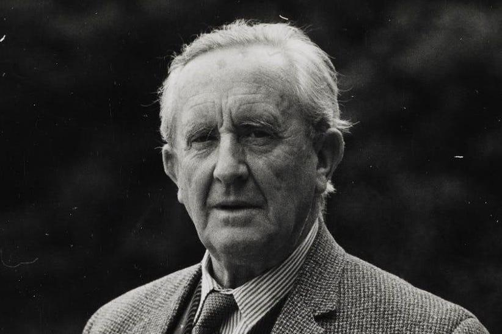J.R.R Tolkien Author
"Not all those who wander are lost."
"Courage is found in unlikely Places."
"Even the smallest person can change the course of the future."
"A single dream is more powerful than a thousand realities"
"It is useless to meet revenge with revenge; it will heal nothing.
"Little by little. one travels far."
"Short cuts make long delays"
"Deeds will not be less valiant because they are unpraised."
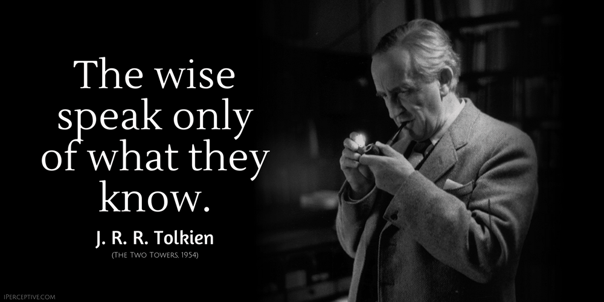
Photos
 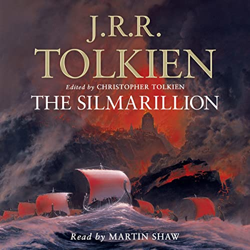
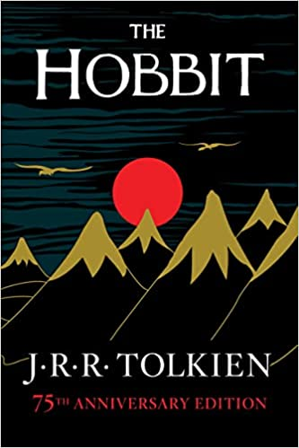
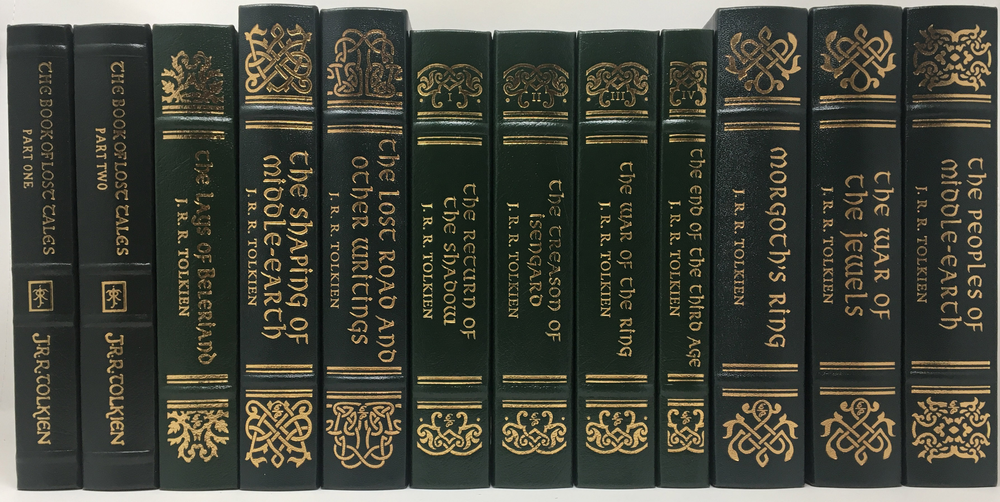
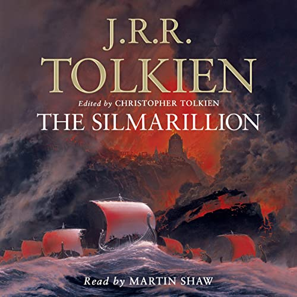
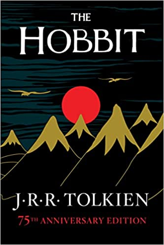
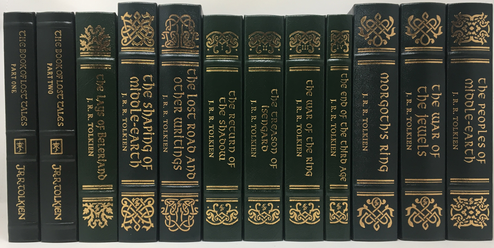

Contact Me
Chicago, US
Phone: +00 773-555-5555
amedellin28@mail.com
If you have any questions about anything, feel free to contact me.